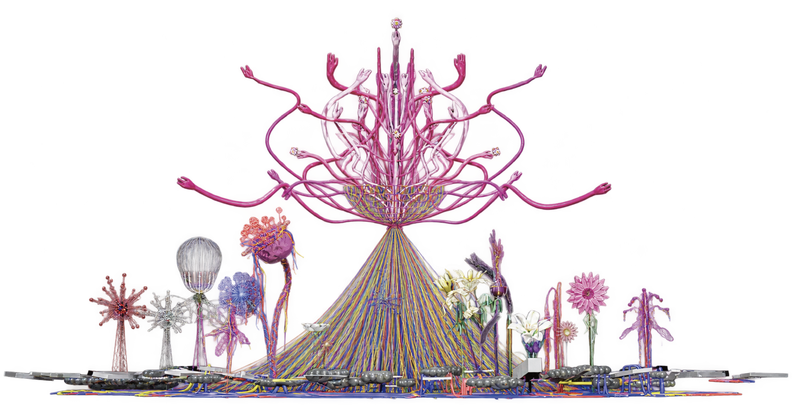
# 3D Modeling, Blender, 2024

# 3D Modeling, Blender, 2024

Metaverse flowers that can grow through network information collection and interaction.
It reflects the behaviors of people sending and receiving network information
and the phenomenon of gradual assimilation.
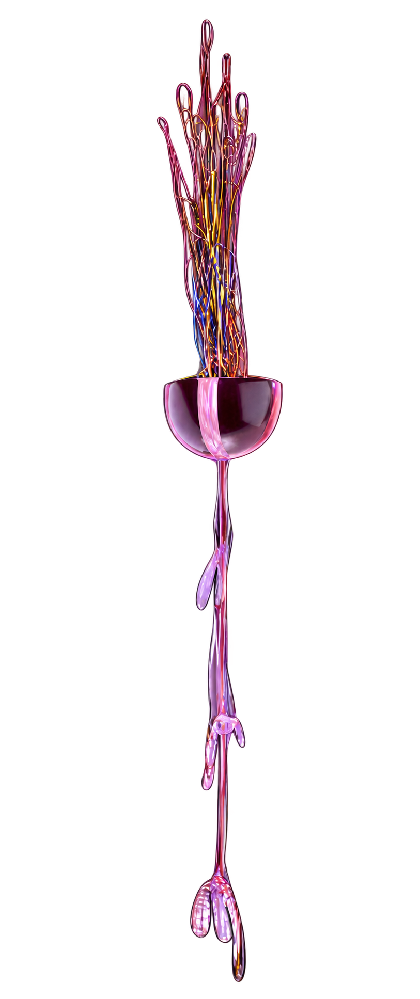
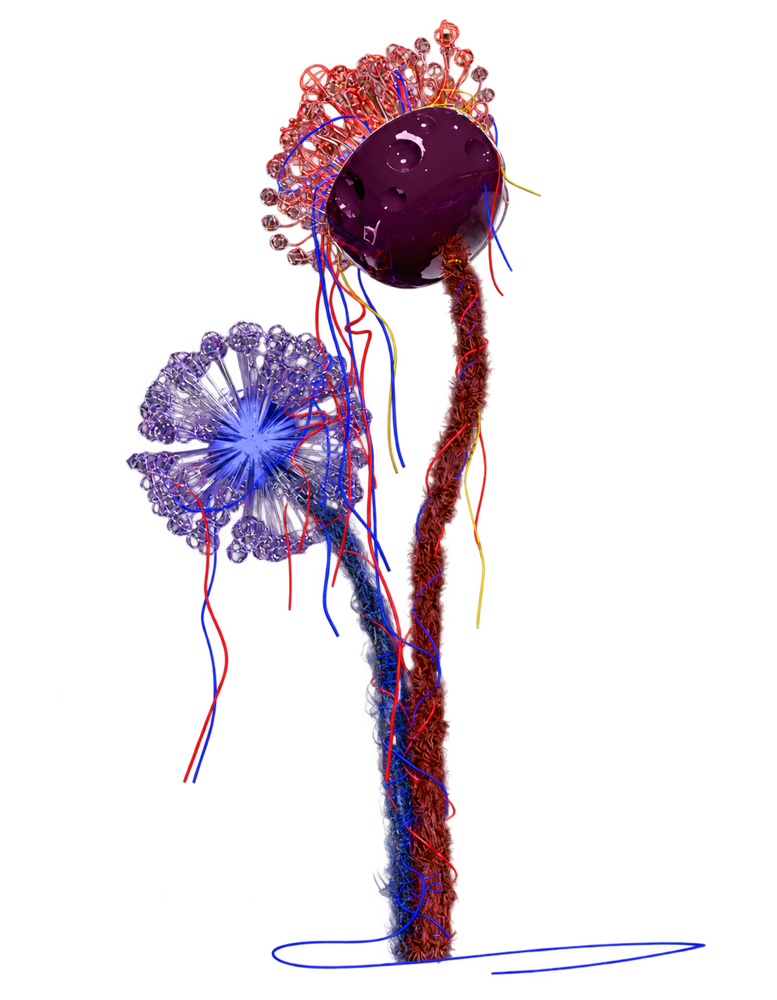
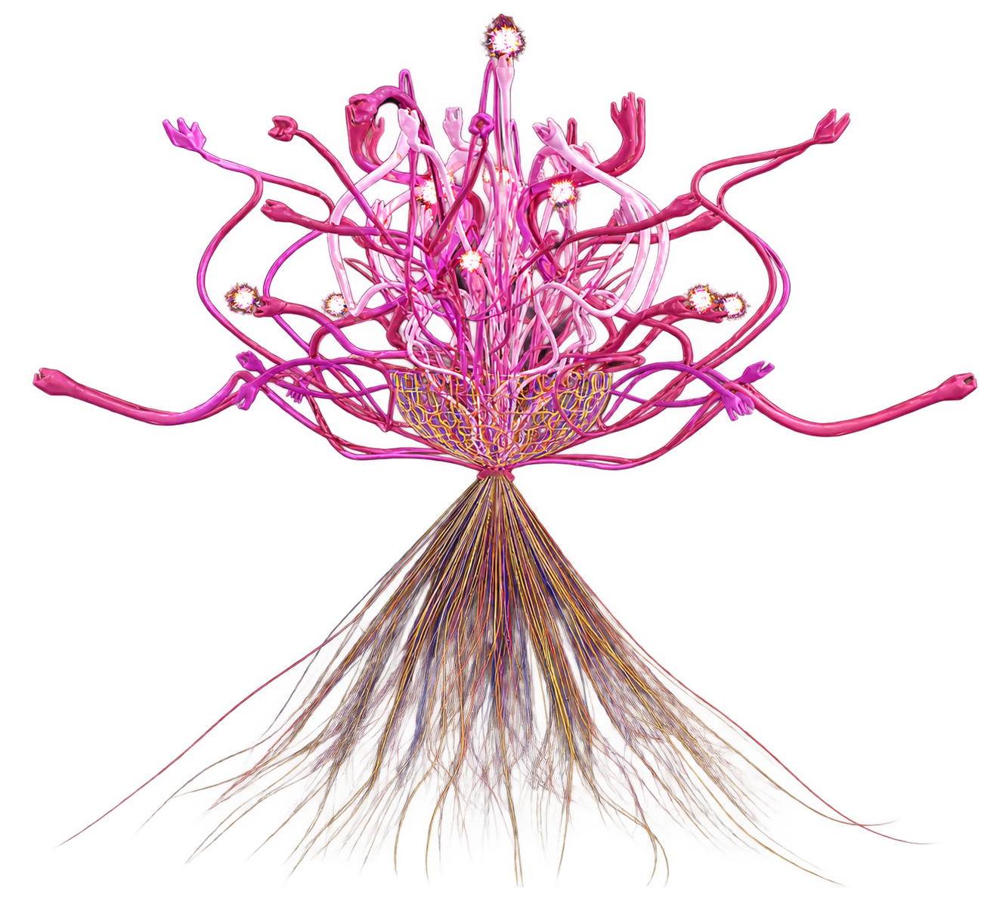
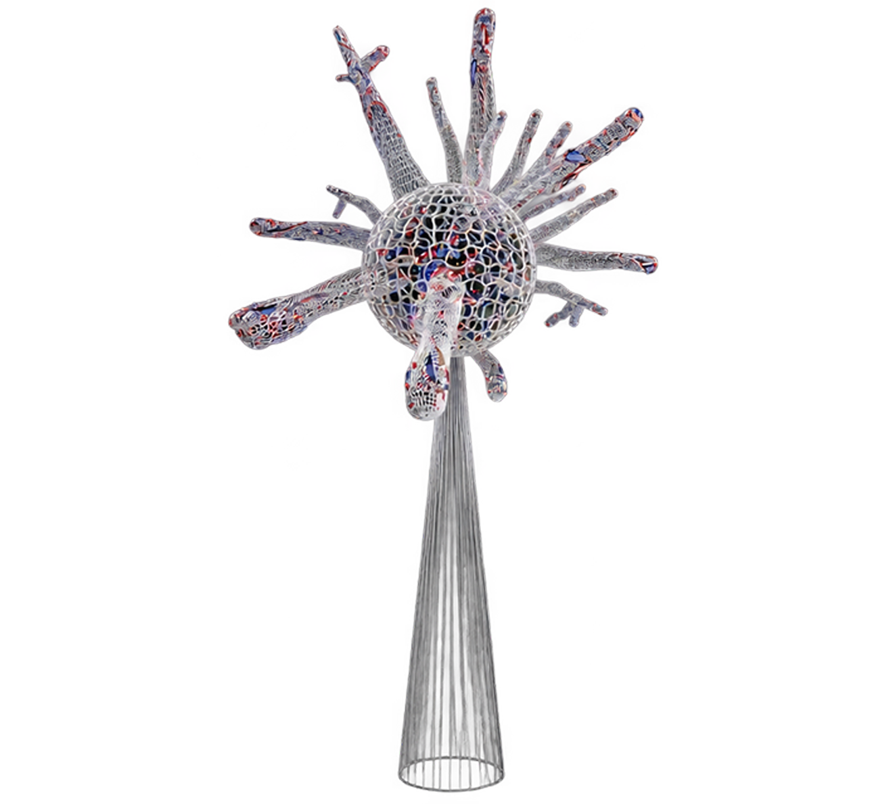
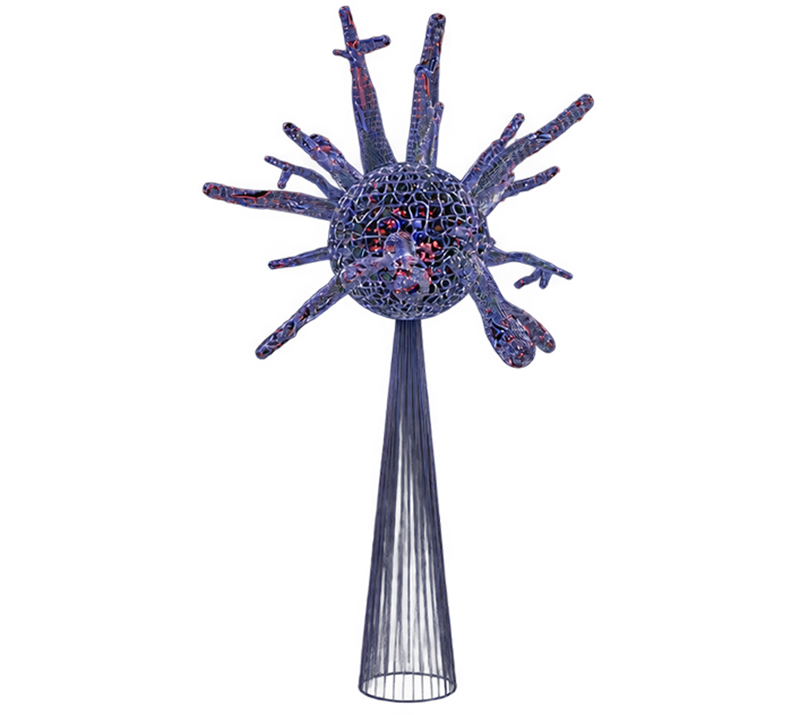
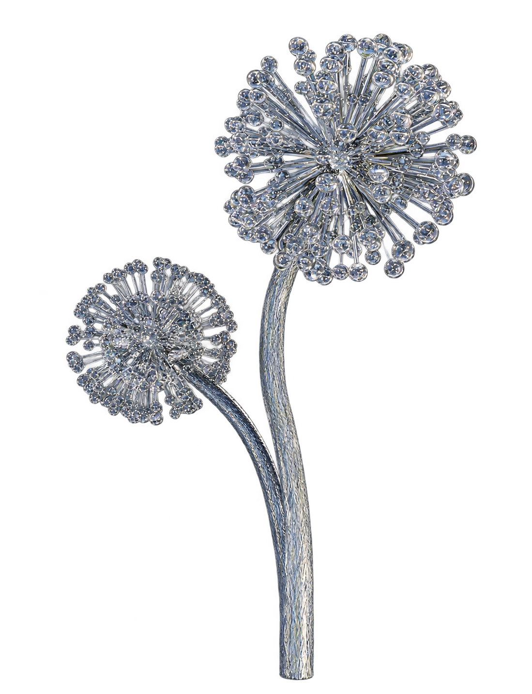
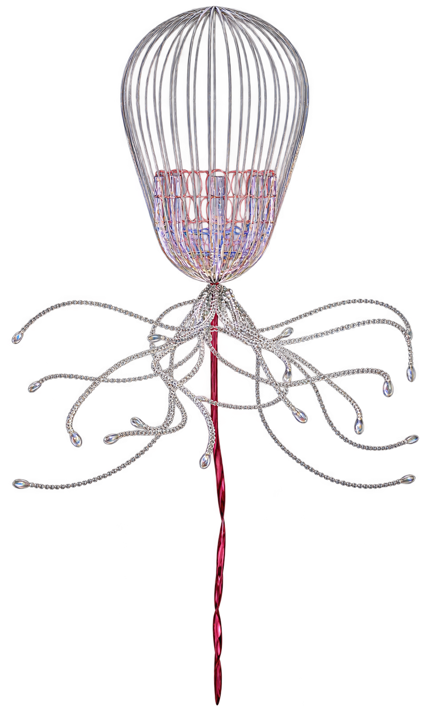
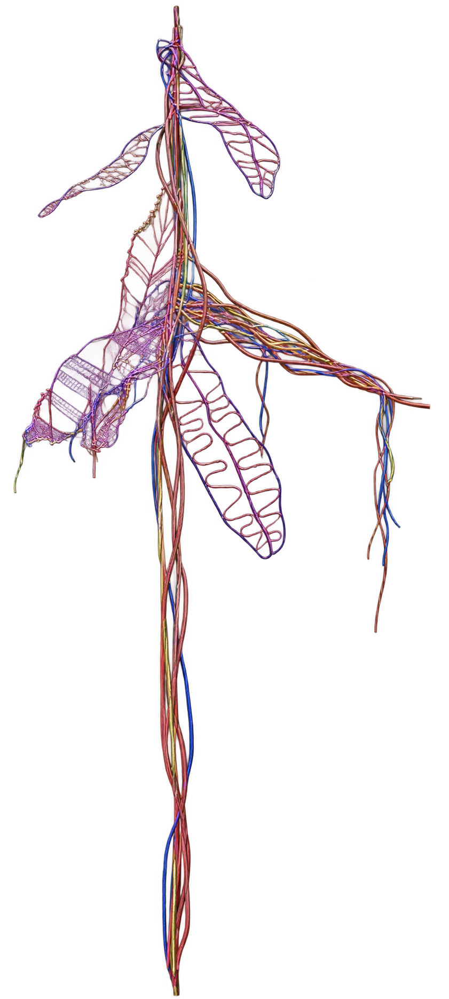
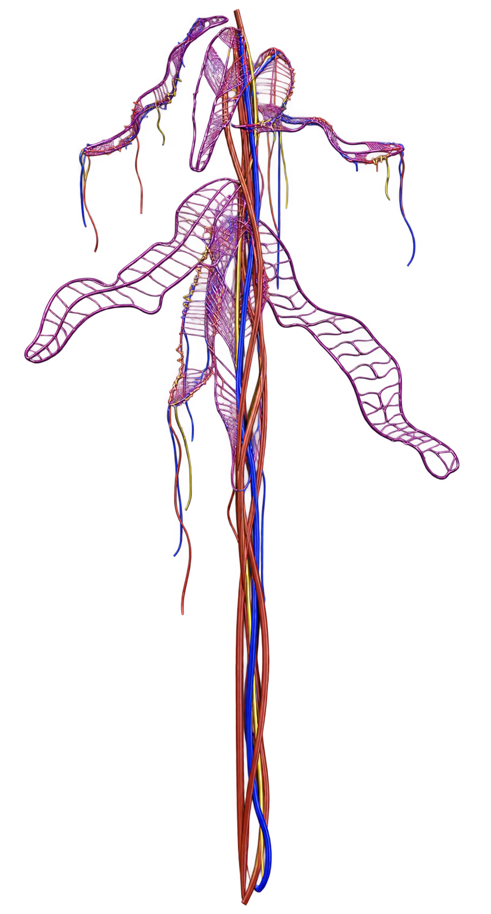
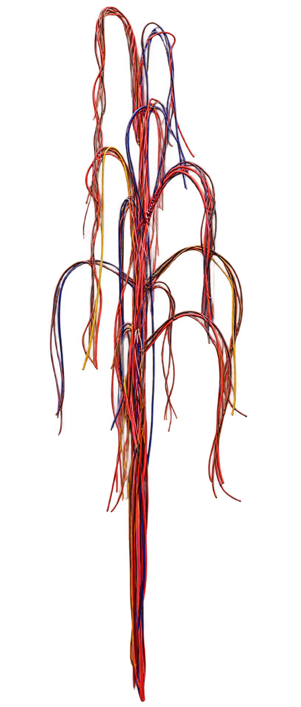
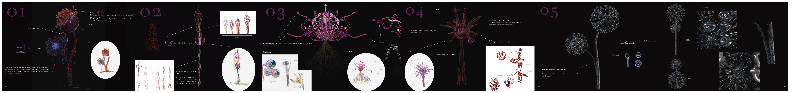